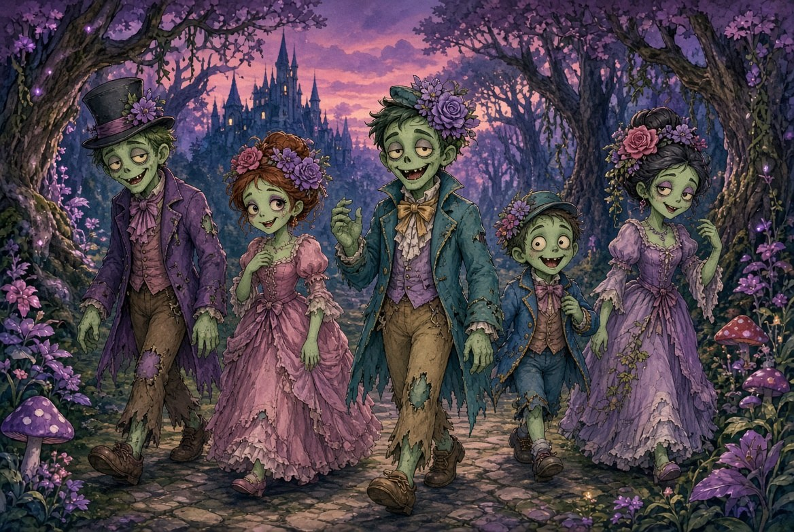
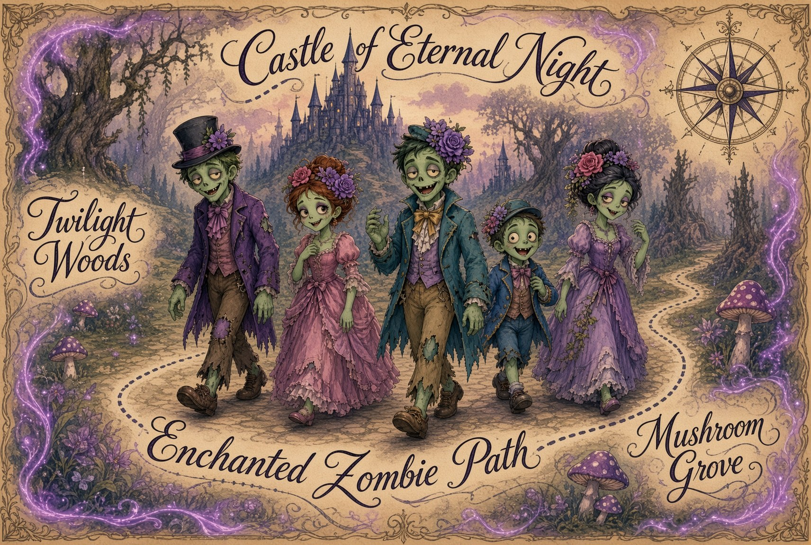

CrystalVision · Vision-layer image archive · Volume III
Volume I could say one thing about all fourteen of its plates: none were evidence. Volume II found five that were. This volume is very small and makes one point: an illustration, and the same illustration issued as a chart.
Nothing in the picture changed between them. What was added was a compass rose, a dashed route and four place names — conventions a reader has been trained to take as a promise that someone went and looked. Nothing was measured before they were added and nothing was measured after.
Always mark which lines are dreamed and which are surveyed, and never let a dreamed line pretend it was measured.
The Incognita Rule
Volume I — fourteen plates, none of them evidence — is here. Volume II — sixty-six plates, five that hold up — is here.
I
A picture, and then the same picture wearing a chart. Nothing was measured before the compass rose was added and nothing was measured after. Read them in order — the whole volume is the difference between the two.

P01
Five figures in a purple wood
Five costumed figures walking a cobbled path out of a twilight forest, a spired castle on the ridge behind them, toadstools and violet blossom either side. Storybook illustration, competently done, making no claim whatsoever.
It is here as the control. Catalogued alone it would belong in the back of Volume II with the landscapes and portraits — the work that asserts nothing and needs to assert nothing. Its whole function is to be the before.

P02
The same scene, issued as a chart
The identical procession, now mounted on aged parchment inside a ruled border, with a compass rose in the upper right and four place names lettered across it: Castle of Eternal Night, Twilight Woods, Mushroom Grove, and along the cobbles, Enchanted Zombie Path. A dashed line runs the length of the route.
Every one of those additions is a cartographic signal, and not one of them carries cartographic content. The compass rose indexes no orientation — nothing in the picture is north of anything else. The dashed line is the road already visible in the painting, retraced. The place names label three things that are simply the illustration’s background, foreground and middle distance. There is no scale, no projection, no coordinate, and nothing that would let a reader place any feature relative to any other.
This is the plate this project is named for. Terra Australis Incognita was drawn with the same equipment — a confident coastline, a compass rose, a convincing hand — over a continent nobody had surveyed, and it was believed for roughly three centuries because it looked exactly like the charts that were right. The difference between this parchment and a map is not draughtsmanship or sincerity. It is whether anything behind the line was measured.
Held against the plate above it, nothing in the picture changed. No figure moved, no light shifted, no line was redrawn. What was added was a set of conventions that a reader has been trained to take as a promise that someone went and looked. That is the entire distance between the two plates, and it is enough.
This volume was drafted at five. Three were removed on 11 August 2026 once their provenance was established: they were collected from elsewhere rather than made for this project — among them a diagram of the diatonic system that had been checked, found correct, and given the silver Surveyed stamp.
Being correct is not the same as being ours. A plate archive that catalogues other people’s work as its own vision layer has already misled its reader in the rail, before a word of the reading is reached, and no amount of accuracy further down the page repairs that. The images were not committed anywhere.
Origins for the two that remain were not supplied. Volumes I and II name a
generator for every plate; these rails read Origin: not supplied rather
than carrying a guess. It is one line per plate in build/plates3.py whenever
the maker records them.